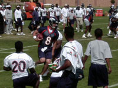
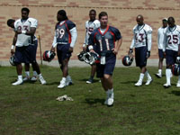
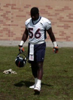
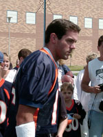
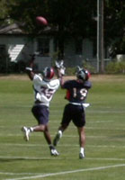

The Story behind Rod Smith
As a young lad, my family would travel to Colorado on a quest to visit family every August. While the frequent stops at Runza (mini corndogs and fries) and Taco John's (6 tacos and potato oles) were well worth the travel time (by car), there was also another event that I always looked forward to: Denver Broncos training camp. The camp was held in Greeley (I believe at the University of Northern Colorado), where the players stayed in the dorms, and the practices were free to view for the public. It was also a great place to get autographs, and there was a Taco John's very close to campus. Unfortunately, they have now moved training camp to Dove Valley.
As this was the time before digital cameras (at least in the Welburn home), I don't have easy access to many older pictures to litter this page with, only ones from the last few times I went in early high school. However, NFL training camp is an autograph collector's dream. While you get an opportunity to watch the entirity of the days workouts, which in hindsight I would probably enjoy more now, back then the autographs were clearly the primary target
Normally an autograph line would form, and the team would select 5 guys to sign autographs each day (often one real player, one guy who was decent, and three guys who wouldn't make the team). My father and I frequently sat in this line during the practice because I loved autographs, but sometimes we would watch some practice first.
Now there are plenty of great moments from training camp that I remember. They include:
- My father grabbing a Ray Crockett glove tossed into the crowd by Ray Crockett himself
- My father grabbing a Jeff Lewis wristband tossed into the crowd by Jeff Lewis himself (recurring theme?)
- Me breaking through the do not cross line into the circle drive of the dorms the players stayed at to acquire Alfred Williams parking pass (and subsequently getting it autographed)
- Me once again breaking through the do not cross line to acquire Scott Pospisil's Denver Broncos ID that the players wore around their neck and got it autographed (probably the hardest thing to acquire there, unfortunately I got one from the guy who didn't make the team and no one has ever heard of). Note: I just looked him up to make sure I spelled his name right (and I did). It's amazing that I remember his name (he was cut in 2001)
There are also a long list of guys who dominated in training camp (that I badly wanted autographs of, and did get) that ended up doing nothing in the NFL. Examples of this were Leeland McElroy, Chris Watson, Kevin Kasper. Fortunately my father kept me from getting Chris Watson's autograph on the same mini helmet as Dale Carter and Ray Crockett. Also, Brian Griese laughed when I had him sign a mini mini helmet (diameter probably slightly larger than a quarter), joking that it could not be done. However, all of these moments are put to shame after I experienced the following:
I believe I was in elementary school at this time (the reasoning for which I will detail later), when my father and I were sitting behind the rope, watching the wide receivers run routes and catch passes from quarterbacks. However, one ball flew over the outstretched arms of Rod Smith, then in his first few seasons (I don't remember a specific year, but this pre-Super Bowls). The ball bounced a few feet away from me, where it stopped. After my dad urged me to go get it, I illegally broke the barrer of a tiny yellow rope and grabbed the ball. As Rod came over, he did not walk over to grab the ball. Instead, he stopped a few feet away from me and held up his hands, telling me to throw it to him. I threw one of my patented end over end passes (that I still throw to this day), and Rod instantly became my favorite player. Surely it was fate that I, like Rod Smith, was born on May 15 (along with a slew of author notable athletes, such as George Brett, Emmitt Smith, and Josh Beckett).
Now how do I remember the age range that I was at the time? Two reasons: First, I remember wearing my jersey to schools on the days before the Super Bowls. The other reason? Back in those days, my sister and I each got 40 dollars to spend on the two week trip. On this particular trip, I was going to spend 36 of my 40 dollars on a Rod Smith jersey. My father ended up splitting the cost with me, allowing me to purchase other assorted goods later (like my youthful fascination with buying rocks).
After that, I ended up with countless Rod Smith autographs, including a mini helmet, a mini-mini helmet, and a football. But it wasn't until later, as a partially grown pre-teen still wearing my jersey, that I was standing in a crowd getting autographs when none other that Rod walked over and signed my jersey. Afterward, my father and I surely celebrated at Taco John's.